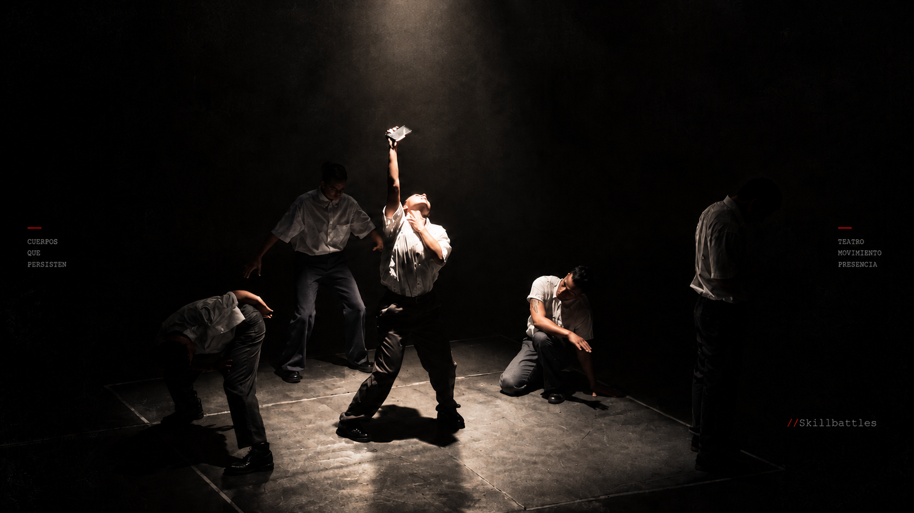

← Volver a los proyectos
J.D. PRODUCIONES / TEATRO FÍSICO
Inconsistencia
Una mañana cualquiera.
Un mensaje que lo cambia todo.
LA OBRA
Sinopsis
Narra la historia de Benjamín, quien una mañana cualquiera toma el metro rumbo a su trabajo. Como todos los días, todo parece seguir su curso, hasta que un mensaje rompe la monotonía de lo normal. Al escucharlo, su cuerpo se remueve por completo y lo lleva a ensimismarse. Al intentar tomar un taxi en la calle, ocurren una serie de eventos y malentendidos.
Consultar sobre la obra ↗INCONSISTENCIA / EN ESCENA
El cuerpo en escena
